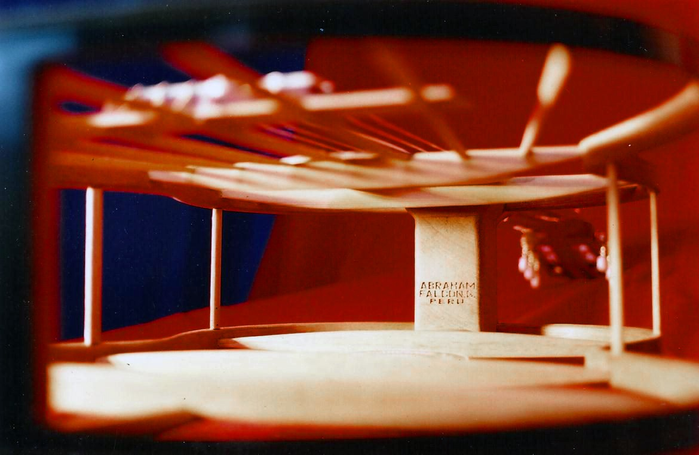
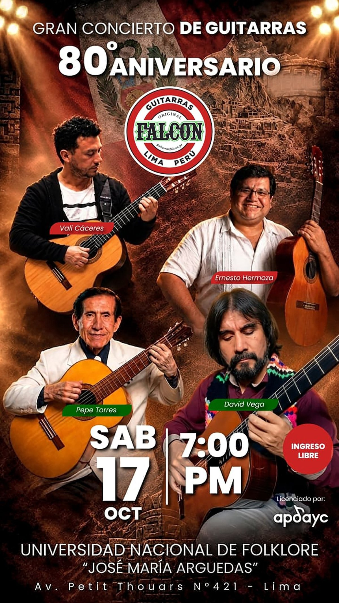

Línea de entrada
Estudio
La puerta de entrada al sonido Falcón. Ideal para estudiantes y aficionados que quieren una guitarra honesta, cómoda y con carácter. La compañera perfecta para los primeros acordes de un vals criollo.
Taller Luna Pizarro · La Victoria · Lima
Tres generaciones de luthería criolla. Una estructura patentada que no tiene antecedentes desde Torres Jurado. El sonido que acompañó a los grandes de la canción criolla y del folclor andino — y que sigue naciendo, instrumento a instrumento, en el mismo taller de siempre.

La diferencia
Don Abraham descubrió que las guitarras europeas, aunque finas, eran frágiles y de sonido poco profundo. Quiso un instrumento capaz de emitir sonidos penetrantes, como los que había escuchado en su Coracora natal.
De esa búsqueda nació la estructura Falcón: espinetas colocadas en forma de abanico que parten de la barra armónica central y concluyen en las cintas de amarre, encoladas al tablero armónico. Una disposición sin antecedentes históricos en los modelos desde Torres Jurado (1820) hasta la fecha. No se trata solo de un invento técnico: es la razón por la que un vals criollo o un huayno ayacuchano suenan con esa profundidad inconfundible.

Estructura internaInnovación estructural
El 20 de agosto de 2009, la «Innovación Estructural para la Guitarra Peruana Clásica de Concierto» creada por Abraham Falcón García quedó registrada en INDECOPI (Resolución N.º 014132-2009).
Fotografía de la estructura interna de una guitarra Falcón. Las espinetas se abren desde la barra central en forma de abanico y concluyen en las cintas de amarre, encoladas al tablero armónico.
Catálogo
Desde la guitarra de estudio hasta la de concierto, todas llevan dentro la estructura Falcón y el oficio del taller de Luna Pizarro.
La puerta de entrada al sonido Falcón. Ideal para estudiantes y aficionados que quieren una guitarra honesta, cómoda y con carácter. La compañera perfecta para los primeros acordes de un vals criollo.

Diseñada para la peña y la jarana: proyección fuerte, armazón resistente y el sonido penetrante que pidió don Abraham. Es la guitarra que aguanta la noche de peña completa.

Para el músico que ya sabe lo que busca: maderas seleccionadas, equilibrio tonal y la proyección del modelo peruano de concierto. Pensada para el escenario, la grabación y la docencia exigente.
Memoria viva
Del río Palpa a La Victoria, la guitarra Falcón sonó en las peñas de Barrios Altos, en las jaranas del Rímac y en los escenarios que definieron la canción criolla y el folclor andino.
«La verdad, pegó muy bien, porque en esa época, entre los años 60 y 70, había un boom de la canción criolla, había un contexto muy bueno, y eso ayudó mucho a que la gente conociera la guitarra criolla, la guitarra costeña.»
 Archivo familiar
Archivo familiar
Arturo «Zambo» Cavero, Óscar Avilés, Porfirio Vásquez, Humberto Pimentel, el trío Los Chamas, Pepe Villalobos… y del lado andino, el Jilguero del Huascarán, Raúl García Zárate y Manuelcha Prado. La marca superó la crisis de los 80 —el terrorismo y la inflación que apagaron las fiestas— y la pandemia. Hoy la dirige la tercera generación, con el mismo oficio y la misma obsesión por el sonido.
El sonido que las definió
Durante casi ocho décadas, la guitarra Falcón fue la voz de la música peruana en sus escenarios más importantes.
Guitarra criolla
Una de las figuras más grandes de la canción criolla peruana, ligado al taller desde sus inicios en Lima.
Canto criollo
La voz de la peña limeña, acompañado por el sonido Falcón en sus presentaciones más recordadas.
Guitarra andina
Uno de los grandes exponentes ayacuchanos que apreció la guitarra Falcón por su profundidad y proyección.
Guitarra ayacuchana
Maestro de la guitarra de Ayacucho, entre quienes dieron a conocer el modelo peruano.

La tradición continúa
El legado de Abraham Falcón no vive solo en el taller: vive cada vez que una generación nueva se reúne a tocar. El Gran Concierto de Guitarras por el 80.º Aniversario reunió a músicos que llevan el sonido Falcón a los escenarios de hoy.
Vito Cores, Ernesto Hermoza, Pepe Torres y David Vega, entre otros, compartieron escenario bajo el sello de la guitarra que nació en 1946. Es la prueba de que la tradición no se pierde mientras haya manos dispuestas a tocarla.
Por qué elegir Falcón
La única estructura de guitarra peruana clásica de concierto registrada ante INDECOPI. No es marketing: es un invento documentado, nacido del oído de don Abraham y de ochenta años de oficio familiar.
Cada guitarra pasa por manos expertas en el taller de Luna Pizarro 310. No hay producción en masa, ni dos instrumentos idénticos. Selección de maderas, armado de la estructura, ensamble y afinación final.
Comprar una guitarra Falcón es sumarse a una cadena que va desde Abraham Falcón hasta el joven que hoy aprende su primer vals en una peña de La Victoria. Es patrimonio vivo, no un objeto de vitrina.
Oficio
Cada instrumento pasa por manos expertas. No hay dos iguales.
Se eligen las maderas según el modelo y el sonido buscado, con el criterio que la familia ha refinado por tres generaciones.
Se arma el tablero con la barra armónica central y las espinetas en abanico, la innovación patentada que define el instrumento.
El cuello, el diapasón y el cuerpo se unen con precisión de luthier, buscando comodidad y estabilidad a lo largo de los años.
Don Abraham afinaba a la perfección sin tocar. Ese oído se mantiene: cada guitarra se revisa y se entrega lista para sonar.
Preguntas frecuentes
Hecha a mano en Lima
Escríbenos por WhatsApp o visítanos en el taller de Luna Pizarro 310, La Victoria. Te ayudamos a elegir el modelo que buscas.